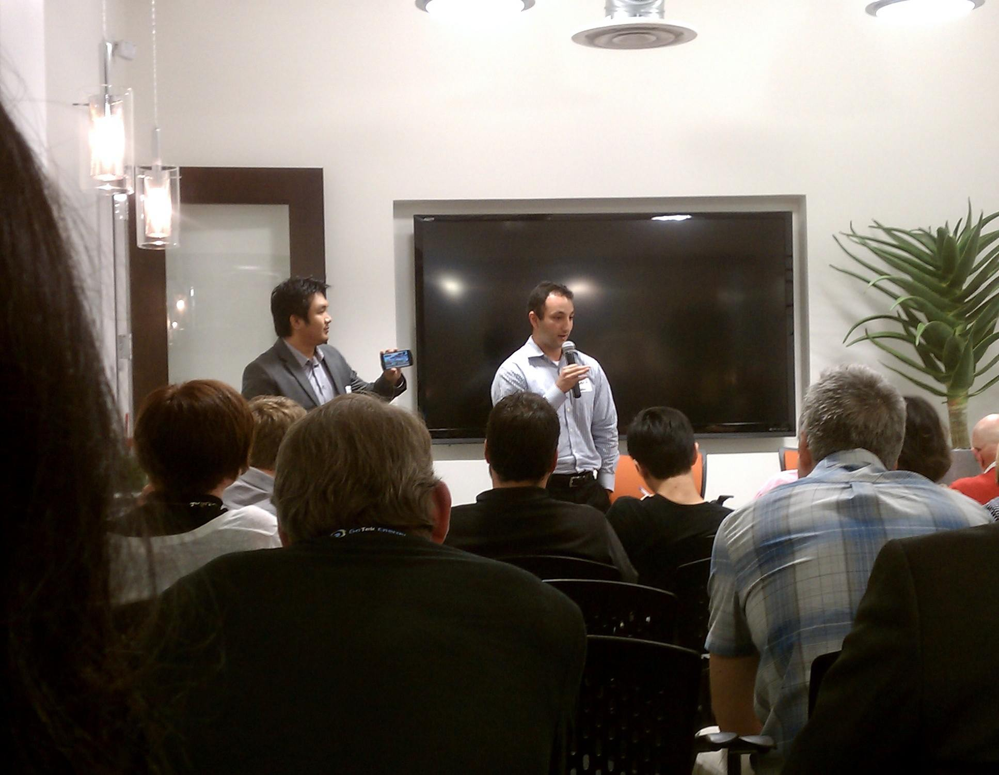

- • UCI Business plan winner -- People’s choice award
- • K5 Launch, fast pitch competition winner

- • Presented at the 6th IEEE Neural Engineering Conference -- November 6th to 8th, 2013 San Diego, CA
- • Presented at the NeuroScience Society -- November 9th to 13th, 2013 San Diego, CA
http://www.sfn.org/annual-meeting/neuroscience-2013
- • Presented at the TEDxYouth@BommerCanyon 3rd Annual Conference -- October 19th, 2013
Robert B Moore Theater - Orange Coast College, CA